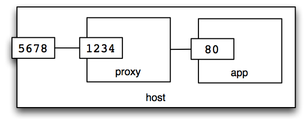
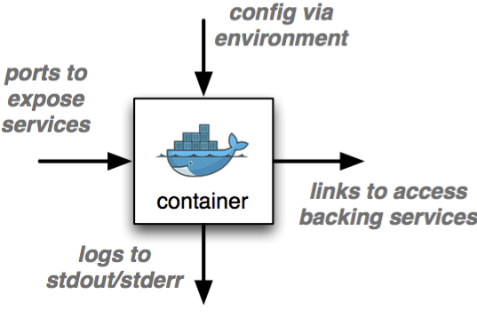

class: center, middle # An introduction to  (BETA) --- # Agenda .lhs[ * Intro and overview * [Hello world!](#hello-world) * [Key concepts](#key-concepts) * [Containers vs Virtual Machines](#containers-vs-vms) * [The clever bits](#the-clever-bits) * Images * [Names and tags](#image-names-and-tags) * [Building images](#building-images) * [Publishing images](#publishing-images) ] .rhs[ * Containers * [Ports](#ports) * [Links](#links) * [Environment variables](#environment) * [Volumes](#volumes) * [`docker-compose`](#compose) * Applied Docker * [12-factor apps](#12factor) * Dev and testing with Docker * Docker in production ] --- # You will need * a copy of this repository `git clone https://git.realestate.com.au/mwilliams/docker-training.git` * a good connection to the internet * Docker! --- # Installing Docker * Linux: `curl -sSL https://get.docker.com/ | sh` * OS X: "Docker Toolbox", or HomeBrew * Windows: "Docker Toolbox" .center[   ] ??? Docker only runs on Linux. On OS X and Windows, you can run it inside a VM. --- name: hello-world # Try it: Hello world! "Pull" an image: ``` $ docker pull hello-world Using default tag: latest latest: Pulling from library/hello-world 3f12c794407e: Pull complete 975b84d108f1: Pull complete Digest: sha256:517f03be3f8169d84711c9ffb2b3235a4d27c1… Status: Downloaded newer image for hello-world:latest ``` Run a container: ``` $ docker run hello-world Hello from Docker. … ``` --- name: key-concepts # Key concepts .lhs[ ## "image" * passive * a file system snapshot * similar to: - Virtual Machine image - AMI (Amazon Machine Image) ] -- .rhs[ ## "container" * active * a group of processes * similar to: - Virtual Machine - EC2 instance ] -- .center[  ] --- # Try it: different Linux distros Run Ubuntu: ``` $ docker run ubuntu dpkg -l ``` or CentOS: ``` $ docker run centos rpm -qa ``` -- … Speedy, huh? -- … or not, if you have a slow internet connection :-( --- # Try it: run a shell ``` $ docker run -i -t ubuntu bash ``` * `-i` = Keep STDIN open * `-t` = Allocate a pseudo-TTY Now, try doing an Ubuntu thing: ``` root@container# apt-get update ``` --- name: containers-vs-vms # Containers vs. Virtualisation .center[  ] ??? With virtualisation, you have the added weight of a guest kernel. With Docker, processes communicate directly with the host kernel. --- # More containers vs. VMs <table class="compare"> <tr> <td></td> <th>Virtual<br/>Machines</th> <th>Docker</th> </tr> <tr> <td class="factor">image size</td> <td>Gigabytes</td> <td>Megabytes</td> </tr> <tr> <td class="factor">startup time</td> <td>minutes</td> <td>sub-second</td> </tr> <tr> <td class="factor">Linux kernel is</td> <td>separate</td> <td>shared</td> </tr> <tr> <td class="factor">isolation is</td> <td>complete</td> <td>pretty good</td> </tr> <tr> <td class="factor">used to encapsulate</td> <td>servers</td> <td>services</td> </tr> </table> --- # Try it: which kernel? Run `uname -a` on both `ubuntu` and `centos`: ``` $ docker run ubuntu uname -a $ docker run centos uname -a ``` Can you explain the result? -- … Different distros, same kernel: same result. .center[  ] --- # Try it: overhead, much? Use "time" to measure the overhead of running a command in a container. ``` $ time docker run ubuntu bash -c "time sleep 1" ``` How much time did Docker add? --- name: the-clever-bits class: center, middle, big # The clever bits Linux "cgroups" + "image" management =  --- # Linux "control groups" .big.center["`chroot` on steroids"] <br/> Isolate processes by limiting access to: - file system - hardware resources - other processes Not a new idea: * aka LXC * project started by Google * used extensively by PaaS such as Heroku * similar to Solaris Zones, BSD Jails --- # Union file systems .lhs[ Images are made of "layers", and can **share** base layers. Container root file system is just another (writable) layer. Various drivers supported: - aufs - devicemapper - btrfs - overlay - zfs ] .rhs[ <table class="docker-image"> <tr><td class="writable">container root</td></tr> <tr><td>↓</td></tr> <tr><td class="snapshot">image layer</td></tr> <tr><td>↓</td></tr> <tr><td class="snapshot">image layer</td></tr> <tr><td>↓</td></tr> <tr><td class="snapshot">image layer</td></tr> </table> ] --- # Try it: test container file system isolation Attempt to cripple your Ubuntu image: ``` $ docker run -i -t ubuntu bash root@3256d8252fe6:/# ls /usr/bin root@3256d8252fe6:/# rm -fr /usr/bin root@3256d8252fe6:/# ls /usr/bin ^D ``` Now, start another container: ``` $ docker run -i -t ubuntu bash root@3ed46bfba026:/# ls /usr/bin ``` --- # Try it: check out those layers Use `docker history` to view image layers ``` $ docker history ubuntu IMAGE CREATED CREATED BY a005e6b7dd01 3 weeks ago /bin/sh -c #(nop) CMD ["/bin 002fa881df8a 3 weeks ago /bin/sh -c sed -i 's/^#\s*\( 66395c31eb82 3 weeks ago /bin/sh -c echo '#!/bin/sh' 0105f98ced6d 3 weeks ago /bin/sh -c #(nop) ADD file:7 ``` --- name: images class: center, middle # Images --- name: image-names-and-tags # Image names and tags Image-name pattern: .center[ `[[<REGISTRY>/]<NAMESPACE>/]<REPOSITORY>[:<TAG>]` ] * `<REGISTRY>` defaults to `docker.io` ("official" registry) * `<NAMESPACE>` defaults to `library` * `<TAG>` defaults to `latest` These are all equivalent: ``` $ docker run hello-world $ docker run hello-world:latest $ docker run library/hello-world $ docker run docker.io/library/hello-world:latest $ docker run 975b84d108f1 $ docker run 975b84d108f1024953937167506c2935a081c8c55ae9e9f7b7deee11 ``` --- # Try it: investigate tags in the `ubuntu` repository Run a command using `ubuntu:15.04`: ``` $ docker run ubuntu:15.04 grep -v "^#" /etc/apt/sources.list ``` Try the same thing using `ubuntu:14.04`: ``` $ docker run ubuntu:14.04 grep -v "^#" /etc/apt/sources.list ``` -- View images in the `ubuntu` repository: ``` $ docker images ubuntu ``` --- name: building-images # Try it: build an image,<br/> the hard way Install some software in an `ubuntu` container: ``` $ docker run -i -t ubuntu bash root@f78d00da1408:/# apt-get update && apt-get install -y curl … ^D ``` Now, `commit` that container to create an image: ``` $ last_container=$(docker ps -ql) $ docker commit $last_container ubuntu-with-curl ``` Check it out: ``` $ docker history ubuntu-with-curl … $ docker run ubuntu-with-curl curl http://example.com ``` --- # Layers, with labels ``` $ docker history ubuntu-with-curl ``` <table class="docker-image"> <tr> <td class="snapshot">70b42c74bb66</td> <td class="labels">ubuntu-with-curl</td> </tr> <tr><td>↓</td></tr> <tr> <td class="snapshot">a005e6b7dd01</td> <td class="labels">ubuntu:latest</td> </tr> <tr><td>↓</td></tr> <tr> <td class="snapshot">002fa881df8a</td> </tr> <tr><td>↓</td></tr> <tr> <td class="snapshot">66395c31eb82</td> </tr> <tr><td>↓</td></tr> <tr> <td class="snapshot">0105f98ced6d</td> </tr> </table> --- # Try it: build an image,<br/> the easy way Use a `Dockerfile`: ``` FROM ubuntu RUN apt-get update && apt-get install -y curl ``` to build an image: ``` $ docker build -t ubuntu-with-curl exercises/ubuntu-with-curl Sending build context to Docker daemon 2.048 kB Step 0 : FROM ubuntu ---> a005e6b7dd01 Step 1 : RUN apt-get update && apt-get install -y curl ---> Running in 51bf195331b7 Ign http://archive.ubuntu.com trusty InRelease Get:1 http://archive.ubuntu.com trusty-updates InRelease [64.4 kB] … ---> 70b42c74bb66 Removing intermediate container 51bf195331b7 Successfully built 70b42c74bb66 ``` --- # Try it: leverage the "build cache" Build an image from the recipe provided: ``` $ docker build -t ciao exercises/ciao ``` -- Build it again: ``` $ docker build -t ciao exercises/ciao ``` Faster, eh? --- # Try it: invalidate the "build cache" Make a change to `exercises/ciao/index.js`, then build again: ``` $ docker build -t ciao exercises/ciao ``` What happens at "Step 5"? -- Now make a change to `exercises/ciao/package.json`, and build again. ``` $ docker build -t ciao exercises/ciao ``` What happens at "Step 4"? --- name: publishing-images # Publishing images Sign up for an account at [`http://hub.docker.com`](http://hub.docker.com) .center[ <img src="media/docker-hub.png" width="100%"/> ] --- # Try it: push an image to Docker Hub Authenticate to Docker Hub: ``` $ docker login ``` "Tag" an image into _your_ namespace: ``` $ docker tag ciao YOURNAMEHERE/ciao ``` Now you can push it: ``` $ docker push YOURNAMEHERE/ciao ``` --- # Try it: pull an image someone else pushed Talk to the esteemed colleague next to you, and ask them for their Docker Hub username. Then, you shoud be able to fetch the image _they_ pushed. ``` $ docker pull YOURNEIGHBOUR/ciao ``` --- class: middle, center # Containers --- # Try it: container basics Run a container as a daemon (in the background): ``` $ docker run -d ciao ``` List the running containers: ``` $ docker ps ``` List ALL the containers: ``` $ docker ps -a ``` Remove a container: ``` $ docker rm <ID_OR_NAME> ``` Remove a RUNNING container: ``` $ docker rm -f <ID_OR_NAME> ``` --- # Try it: name your containers Start a container with a `--name`: ``` $ docker run --name app ciao ``` Now you can use the NAME rather than an ID: ``` $ docker rm -f app ``` --- name: ports # Try it: map a port to a host port ``` $ docker run -d --name app -p 5678:80 ciao ``` .center[ <img src="diagrams/ciao-explicit-port.png" width=40% /> ] ``` $ curl $(docker-machine ip default):5678 ``` Remember to clean up: ``` $ docker rm -f app ``` --- # Try it: use a random host port If you don't specify a host port, Docker will choose one: ``` $ docker run -d --name app -p 80 ciao ``` .center[ <img src="diagrams/ciao-random-port.png" width=40% /> ] Use `docker port` to discover which one it chose: ``` $ docker port app 80 ``` --- # Try it: logs You can get the output using `docker logs`: ``` $ docker logs app ``` or even follow along in real time: ``` $ docker logs --follow --timestamps app ``` --- name: links # Try it: link two containers You can link containers together, without exposing ports to the host: ``` $ docker run -d --name app -p 80 ciao $ docker run -d --name web -p 5678:80 --link app:app woollyams/nginx-reverse-proxy ``` .center[  ] To see proof: ``` $ curl -si $(docker-machine ip default):5678 | grep Server ``` Cleanup: ``` $ docker rm -f app web ``` --- name: environment # Try it: set environment variables Assuming your application looks for environment variables, e.g. ``` var MESSAGE = (process.env.MESSAGE || "Ciao mondo."); ``` You can set them to provide configuration: ``` $ docker run -d --name app -p 5678:5000 -e MESSAGE='Hey, guys!' ciao ``` Test the result: ``` $ curl $(docker-machine ip default):5678 ``` --- name: volumes # Try it: map a volume from the host Mount a directory from the "host": ``` $ docker run -it --rm -v /tmp/my-cache:/var/cache ubuntu bash root@c10a43c38793:/# echo TESTING > /var/cache/test ^D ``` and then later: ``` $ docker run -it --rm -v /tmp/my-cache:/var/cache ubuntu bash root@f5be5dec8a5a:/# ls /var/cache/ ``` --- # Volumes You can also: - mount a volume without specifying the host path - for faster I/O - share volumes with other containers TODO: add some exercises! --- name: compose # Try it: link containers using docker-compose - Lifecycle management for _groups_ of containers. Given YAML config file: ``` app: image: ciao web: image: woollyams/nginx-reverse-proxy links: - app ports: - 5678:80 ``` You can start all the containers with: ``` $ cd exercises/composed $ docker-compose up ``` --- class: middle, center # Applied Docker --- name: 12factor # "12 factor" apps See [12factor.net](http://12factor.net) 1. **Codebase** - One codebase tracked in revision control, many deploys 2. **Dependencies** - Explicitly declare and isolate dependencies 3. **Config** - Store config in the environment 4. **Backing Services** - Treat backing services as attached resources 5. **Build, release, run** - Strictly separate build and run stages 6. **Processes** - Execute the app as one or more stateless processes 7. **Port binding** - Export services via port binding 8. **Concurrency** - Scale out via the process model 9. **Disposability** - Maximize robustness with fast startup and graceful shutdown 10. **Dev/prod parity** - Keep development, staging, and production as similar as possible 11. **Logs** - Treat logs as event streams 12. **Admin processes** - Run admin/management tasks as one-off processes --- # "12 factor" containers .lhs[ * Use environment variables (not files) to configure your app * Expose ports to provide services (e.g. HTTP) * Write logs to STDOUT/STDERR (not to files) * Treat backing services (e.g. database) as external resources ] .rhs[  ] --- # Using docker-compose as a build environment For example: ``` db: image: postgres:9.0 dev: image: ruby:2.2 volumes: - .:/cwd working_dir: /cwd links: - db:db ports: - "80:80" ``` And then: ``` docker-compose run dev ``` --- # Docker in production So many options! Roll your own: - `docker run` plus custom scripts - `docker-compose` Docker-aware clusters: - Amazon **ECS** - Apache **Mesos** - Google **Kubernetes** - Docker **Swarm** Open-source Platforms-as-a-Service: - CloudFoundry - Deis - Convox - etc … --- class: middle, center # Thanks! Feedback is <span style="text-decoration: line-through">welcome</span> essential.